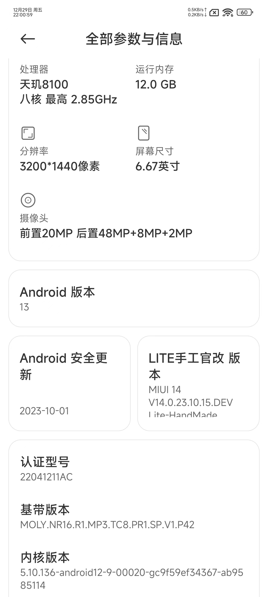
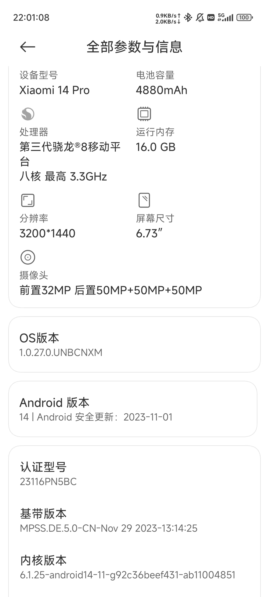

Android¶
Android（/ˈænˌdrɔɪd/）是一个基于 Linux 核心与其他开源软件的开放源代码的移动操作系统，由谷歌成立的开放手持设备联盟持续领导与开发。
相较于 iOS 和 HarmonyOS，Android 最为开放，这为玩机提供了很大的便利。
然而，在各大手机厂商和软件厂商的“努力”下，Android 的开放性越来越差，留给用户的自由越来越少。对于喜欢玩机的用户来说，这是一件非常痛苦的事情。时至今日，最适合玩机的 Android 手机是 Google Pixel 系列。但是，Google Pixel 系列在中国大陆地区并没有销售。在中国大陆地区销售的 Android 手机中，如果有玩机需求，最好选择 小米手机和 一加手机。
Warning
本文中的所有操作都有可能需要清空手机中的数据。在操作前，请务必妥善处理手机中的数据。
解锁 Bootloader¶
玩机的第一步是获取 Root 权限。而获取 Root 权限的第一步是解锁 Bootloader。
需要先电脑中安装 SDK Platform-Tools，即 ADB 和 fastboot 工具包。在 Windows 中，可以通过官方教程安装；在 Linux 中，可以通过包管理器安装，如 Arch Linux 中的 android-tools 包。
小米手机¶
Xiaomi 14 发售以来，申请解锁 Bootloader 需要达到以下要求：
- 小米社区等级达到 5 级
- 完成实名验证
- 参与答题（答题不合格需要等待 7 天后再次答题）
- 每年每用户最多解锁 3 台设备
- 解锁等待期为 72 小时
满足要求后，可以点击“设置”→“更多设置”→“开发者选项”→“绑定账号和设备”。一周后，可以用官方解锁工具申请解锁 Bootloader。
其他手机¶
其他品牌的解锁方法大同小异。时至今日，除 vivo 及其所有子品牌以及独立之后的荣耀以外，主流品牌几乎都可以解锁。华为的搭载 EMUI 的机型以及搭载兼容 AOSP 的 HarmonyOS 的、使用高通骁龙 SOC 的机型也可以通过特殊渠道解锁。
获取 Root 权限¶
获取 Root 权限的方法有很多种，目前对于最新的 Android 版本有两种主流的方法： Magisk 和 KernelSU。
Magisk¶
Note
Magisk 的 GitHub 仓库已归档。
Magisk 是一款开源的 Android Root 解决方案，由 topjohnwu 开发。它可以通过修改 boot.img 来获取 Root 权限。

Magisk 的原理是将 boot.img 中的 init 进程替换为 Magisk 的 init 进程，从而做到在启动时通过添加挂载点的方式修改系统分区，从而获取 Root 权限。Magisk 的优点是不需要修改系统分区，不会导致 OTA 更新失败。
目前常用的 Magisk 有三种，分别是由 topjohnwu 开发的 Magisk 、在 Telegram 群流传的 Magisk Alpha 和 HuskyDG 修改的 Magisk Delta 。现在，由于许多软件添加了较为严格的针对 Magisk 的检测，所以如果要隐藏 Root 权限，需要使用 Magisk Alpha 或 Magisk Delta。但是，Magisk Alpha 可能更不稳定，Magisk Delta 可能更危险。
在刷机之前，我们需要先看看手机内核版本信息。打开“设置”→“关于手机”，找到“内核版本”一栏，查看内核版本信息。这是因为 Android 13 以来，ramdisk 从 boot.img 映像中移除，放在单独的 init_boot.img 映像中，故而需要不同的刷机方法。
内核版本信息的位置


在安装 Magisk 之前，我们需要先获取 boot.img。
对于小米手机来说，可以访问 XiaomiROM.com 下载对应机型、对应版本（即当前手机运行的系统版本）的线刷包（.tgz 格式）或卡刷包（.zip 格式），然后解压，找到 boot.img。也可以在手机的“系统更新”中选择“下载最新完整包”，再在手机目录中的 Download/download_rom 文件夹中找到对应版本的 ROM，将它传输到电脑中，然后解压，找到 boot.img。
如果在解压后的文件夹中找不到 boot.img，找到了 payload.bin，可以使用 payload_dumper 来解压 payload.bin，然后找到 boot.img。
payload_dumper 的使用方法
确保电脑中安装了 Python 3，然后将仓库克隆到本地。
然后，进入仓库目录，安装依赖。
将 payload.bin 放到仓库目录中，然后执行 payload_dumper.py。
等待执行完成后，就可以在 output 文件夹中找到解压后的文件。
payload_dumper_go 的使用方法
从仓库的 Releases 页面下载对应平台的二进制文件，然后将 payload.bin 放到二进制文件所在的目录中，执行二进制文件。
等待执行完成后，就可以在 output 文件夹中找到解压后的文件。
获取 boot.img 后，将 boot.img 传输至手机，安装 Magisk 或 Magisk Delta，打开，点击“安装”→“安装”→“选择并修补一个文件”，选择 boot.img，然后点击“下一步”→“继续”→“完成”，得到修补后的 magisk_patched.img。将 magisk_patched.img 传输至电脑，然后让手机进入 Fastboot 模式。
将 magisk_patched.img 刷入手机。
在安装 Magisk 之前，我们需要先获取 init_boot.img。
对于小米手机来说，可以访问 XiaomiROM.com 下载对应机型、对应版本（即当前手机运行的系统版本）的线刷包（.tgz 格式）或卡刷包（.zip 格式），然后解压，找到 init_boot.img。也可以在手机的“系统更新”中选择“下载最新完整包”，再在手机目录中的 Download/download_rom 文件夹中找到对应版本的 ROM，将它传输到电脑中，然后解压，找到 init_boot.img。
如果在解压后的文件夹中找不到 init_boot.img，找到了 payload.bin，可以使用 payload_dumper 或 payload_dumper_go 来解压 payload.bin，然后找到 init_boot.img。
payload_dumper 的使用方法
在电脑中安装 Python 3，然后将仓库克隆到本地。
然后，进入仓库目录，安装依赖。
将 payload.bin 放到仓库目录中，然后执行 payload_dumper.py。
等待执行完成后，就可以在 output 文件夹中找到解压后的文件。
payload_dumper_go 的使用方法
从仓库的 Releases 页面下载对应平台的二进制文件，然后将 payload.bin 放到二进制文件所在的目录中，执行二进制文件。
等待执行完成后，就可以在 output 文件夹中找到解压后的文件。
获取 init_boot.img 后，将 init_boot.img 传输至手机，安装 Magisk 或 Magisk Delta，打开，点击“安装”→“安装”→“选择并修补一个文件”，选择 init_boot.img，然后点击“下一步”→“继续”→“完成”，得到修补后的 magisk_patched.img。将 magisk_patched.img 传输至电脑，然后让手机进入 Fastboot 模式。
将 magisk_patched.img 刷入手机。
刷入后重启手机即可。
KernelSU¶
Note
KernelSU 的 GitHub 仓库已归档。
KernelSU 比 Magisk 更进一步，它是一个基于内核的 Root 解决方案，支持内核版本 5.10 及以上。目前 KernelSU 还不是很完善，使用时需时刻做好救砖准备。
在 GitHub Releases 中下载 .apk 安装包，安装后打开会显示手机内核信息。再在 GitHub Releases 中下载对应内核版本的 boot.img（注意你的手机的压缩格式，如小米手机通常使用 gz 或不压缩）。
手机进入 Fastboot 模式。
将 boot.img 刷入手机。
刷入后重启手机即可。
LSPosed¶
Note
LSPosed 的 GitHub 仓库已归档。
Xposed 是一个运行于 Android 操作系统的钩子框架。其通过替换 Android 系统的关键文件，可以拦截几乎所有 Java 函数的调用，并允许通过 Xposed 模块中的自定义代码更改调用这些函数时的行为。因此，Xposed 常被用来修改 Android 系统和应用程序的功能。
但是 XPosed 年久失修，不再支持高版本的 Android。LSPosed 是 Xposed 的一个分支，它支持 Android 8.1 ~ 14。
LSPosed 支持两种安装方式：Riru 和 Zygisk。本文只介绍基于 Magisk 的 Zygisk 安装方式。
安装 LSPosed¶
在 Magisk 设置中打开“Zygisk”，重启手机。在 GitHub Releases 下载 LSPosed 的 Zygisk 压缩包，打开 Magisk，点击“模块”，点击“从本地安装”，选择下载的压缩包，刷入模块后重启手机。
打开 LSPosed 管理器界面¶
重启后，会出现一个通知：“LSPosed 已加载”。点击即可打开 LSPosed 管理器界面。
在 LSPosed 管理器设置中可以选择关掉这个通知。同时可以选择“创建快捷方式”，这样就可以在桌面上创建一个快捷方式，方便打开 LSPosed 管理器界面。
如果你关掉了这个通知，也没有创建快捷方式，可以打开拨号盘，输入 *#*#5776733#*#*（*#*#LSPosed#*#*），也可以打开 LSPosed 管理器界面。
安装模块¶
LSPosed 模块是以 .apk 安装包形式存在的。直接将它们当做普通应用安装，然后在 LSPosed 管理器界面中启用即可。
隐藏 Root 权限¶
有些应用会检测手机是否获取了 Root 权限，如果获取了 Root 权限，就会拒绝运行。这时，我们需要隐藏 Root 权限。
MagiskHide¶
MagiskHide 是 Magisk 的一个功能，可以隐藏 Magisk 的一些文件，从而隐藏 Root 权限。
在 Magisk 设置中打开“MagiskHide”，点击“配置 MagiskHide”，选择需要隐藏 Root 权限的应用。
道高一尺，魔高一丈，这种方法在很多时候已经不管用了。
Shamiko¶
Shamiko 是一个基于 Magisk 和 Zygisk 的 Root 隐藏模块，它可以隐藏 Magisk 和 Zygisk 的一些踪迹，从而隐藏 Root 权限。不过具体能不能隐藏就随缘了。
在 GitHub Releases 下载 Shamiko 的压缩包，打开 Magisk，点击“模块”，点击“从本地安装”，选择下载的压缩包，刷入模块后重启手机。
装完 Shamiko 后，可以使用 Momo（需在 Magisk Alpha 的 Telegram 群中自行寻找安装包）来检测是否隐藏成功。
刷入 ROM¶
使用 ADB 和 Fastboot 工具还可以刷入第三方 ROM，给手机增添别样的风味，也可能使得旧手机焕发新生。
使用哪个第三方 ROM 见仁见智。本文只介绍如何刷入类原生的 LineageOS。
备份字库¶
手机的字库是 Flash Memory 的俗称，学名为闪速只读存储器。体验过单片机的同学应该知道，如果我们想要在屏幕上显示汉字，就需要存储海量的汉字点阵信息。由于其体积庞大，一般将其单独存储在某个存储器中。这就是“字库”这个名字的由来。当功能机演变为智能机，字库一般被用来存储系统的一些重要分区，如 boot、system、vendor 等。如果我们刷入第三方 ROM，如果操作不当，有可能损坏这些分区，导致手机无法正常启动。所以，为了便于在出问题时方便地回到可用的状态，我们需要先备份字库。
备份字库需要先获取 Root 权限，以访问根目录。
搭载高通 SOC 的手机，通常在 /dev/block/bootdevice/by-name/ 目录中，可以找到各个分区的符号链接。使用 ls -l 命令可以查看符号链接的目标。然后，使用 dd 命令备份字库。可以写一个简单的 sh 脚本来备份所有分区。
使用 Root 权限运行这个脚本，就可以备份所有分区到 /sdcard/backup 目录中，将其传输至电脑或其他安全位置保存即可。
搭载联发科 SOC 的手机，通常在 /dev/block/by-name/ 目录中，可以找到各个分区的符号链接。使用 ls -l 命令可以查看符号链接的目标。然后，使用 dd 命令备份字库。可以写一个简单的 sh 脚本来备份所有分区。
使用 Root 权限运行这个脚本，就可以备份所有分区到 /sdcard/backup 目录中，将其传输至电脑或其他安全位置保存即可。
准备底包¶
有的第三方 ROM 对刷入前手机运行的系统有所要求。因为需要保证手机的内核版本被 ROM 兼容。
下面，我们以为 Redmi 9 (lancelot) 刷入 LineageOS 为例。根据 LineageOS 官网的安装说明，适配 Redmi 9 的 LineageOS 20 要求底包版本为 Android 11，对应的 MIUI 版本是 MIUI 12.5。所以，我们需要先准备好 MIUI 12.5。
如果此时你的 Redmi 9 搭载的是 MIUI 12.5，那么你可以直接跳过这一步。
升级¶
如果此时你的 Redmi 9 搭载的是 MIUI 11 或 MIUI 12.0，且同时还能接收到 MIUI 12.5 的 OTA 更新1，那么你可以直接升级到 MIUI 12.5。
如果接收不到 OTA 更新，可以参照降级的内容。
降级¶
如果此时你的 Redmi 9 搭载的是 MIUI 13，那么你需要先降级到 MIUI 12.5。
从高版本 Android 降级到低版本 Android 时，需要清除数据。对于小米手机而言，刷入 MIUI 的官方 ROM 可以通过 MiFlash 线刷。在 XiaomiROM.com 下载对应的线刷包（.tgz 格式），解压，在 MiFlash 中选择 flash_all.bat 的父文件夹，然后将手机进入 Fastboot 模式，连接电脑，点击“刷新”，然后点击“刷机”。注意选择“清除所有数据”选项。
使用 MiFlash 时确保 MiFlash 路径和线刷包路径简单，不要有中文或空格、驱动已安装、手机进入 Fastboot 模式、手机和电脑连接正常。
报错可参考 https://miuiver.com/miflash-problem-list/ 。
不重要的题外话
本人在刷机时遇到 remote: 'failed to check sparse crc' 的错误，参考 XDA 论坛上的帖子，将 MiFlash 的 Fastboot 替换为 miui.eu 中的 Fastboot 未果，后怒而直接重启，出现无法进入系统和 Fastboot 现象，但是能进入 Recovery。直接在 Recovery 中清除所有数据后，重启即进入系统。
刷入 Recovery¶
刷入 Recovery 主要是为了卡刷。
较为受欢迎的 Recovery 有两个：TWRP 和 OrangeFox Recovery。TWRP 是一个开源的第三方 Recovery，OrangeFox Recovery 是基于 TWRP 的第三方 Recovery，它们都支持刷入第三方 ROM。
不过 LineageOS 要求使用 LineageOS 定制的 Recovery，照做即可。
刷入系统¶
线刷使用 Fastboot，卡刷使用 Recovery。
卡刷可以选择将系统存储到外部存储器中用 Recovery 卡刷，也可以用 ADB 来侧载，这里不再赘述。
-
可能需要逐步更新，即先升级到 MIUI 12.0，才能接收到 MIUI 12.5 的 OTA 更新。 ↩